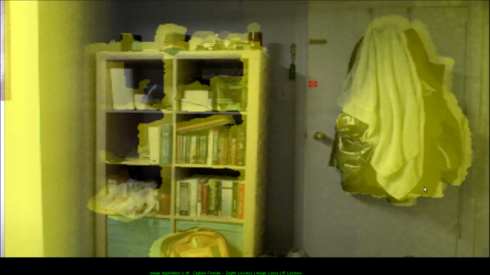
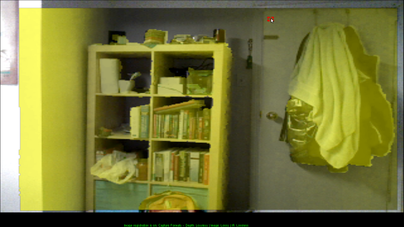

Kinect v1 SDK C++ - 3. Kinect Point Clouds

Goals: Learn how to align color and depth images to get
a colored point cloud.
Source: View Source Download: 3_PointCloud.zip
Overview
There are several new steps we want to take in this tutorial. The most interesting part is that now we're working with 3D data! Creating an interactive system is a bit too much code for us, though, so we just have a simple rotating point cloud. This tutorial has three parts: first, we'll talk briefly about why point clouds are harder than you might think. Then, we'll show the Kinect SDK side of how to get the right data. Finally, we'll show some OpenGL tricks to make things easy to display.Contents
Depth and RGB Coordinate Systems
Kinect Coordinate System
The Kinect uses a cartesian coordinate system centered at the Kinect. The positive Y axis points up, the positive Z axis points where the Kinect is pointing, and the positive X axis is to the left.
Alignment
A naive way of making a point cloud might directly overlap the depth and color images, so that depth pixel (x,y) goes with image pixel (x,y). However, this would give you a poor quality depth map, where the borders of objects don't line up with the colors. This occurs because the RGB camera and the depth camera are located at different spots on the Kinect; obviously, then, they aren't seeing the same things! Normally, we'd have to do some kind of alignment of the two cameras (the formal term is registration) to be able to map from one coordinate space to the other. Fortunately Microsoft has already done this for us, so all we need to do is call the right functions.|  |  |
Kinect Code
A lot of this is just combining the code from the first two tutorials.Kinect Initialization
There's nothing new in initialization. We simply need two image streams, one for depth and one for color.
HANDLE rgbStream;
HANDLE depthStream;
INuiSensor* sensor;
bool initKinect() {
// Get a working kinect sensor
int numSensors;
if (NuiGetSensorCount(&numSensors) < 0 || numSensors < 1) return false;
if (NuiCreateSensorByIndex(0, &sensor) < 0) return false;
// Initialize sensor
sensor->NuiInitialize(NUI_INITIALIZE_FLAG_USES_DEPTH | NUI_INITIALIZE_FLAG_USES_COLOR);
sensor->NuiImageStreamOpen(
NUI_IMAGE_TYPE_DEPTH, // Depth camera or rgb camera?
NUI_IMAGE_RESOLUTION_640x480, // Image resolution
0, // Image stream flags, e.g. near mode
2, // Number of frames to buffer
NULL, // Event handle
&depthStream);
sensor->NuiImageStreamOpen(
NUI_IMAGE_TYPE_COLOR, // Depth camera or rgb camera?
NUI_IMAGE_RESOLUTION_640x480, // Image resolution
0, // Image stream flags, e.g. near mode
2, // Number of frames to buffer
NULL, // Event handle
&rgbStream);
return sensor;
}
Getting depth data from the Kinect
The Kinect SDK provides a function that tells you which pixel in the RGB image corresponds with a particular point in the depth image. We'll store this information in another global array,depthToRgbMap.
In particular, we store the column and row (i.e. x and y coordinate)
of the color pixel in order for each depth pixel.
Now that we're dealing with 3D data, we want to imagine the depth frame
as a bunch of points in space rather than a 640x480 image. So in our
getDepthData function, we will fill in our buffer with
the coordinates of each point (instead of the depth at each pixel).
This means the buffer we pass into it has to have size width*height*3*sizeof(float) for float typed coordinates.
// Global Variables
long depthToRgbMap[width*height*2];
// ...
void getDepthData(GLubyte* dest) {
// ...
const USHORT* curr = (const USHORT*) LockedRect.pBits;
float* fdest = (float*) dest;
long* depth2rgb = (long*) depthToRgbMap;
for (int j = 0; j < height; ++j) {
for (int i = 0; i < width; ++i) {
// Get depth of pixel in millimeters
USHORT depth = NuiDepthPixelToDepth(*curr);
// Store coordinates of the point corresponding to this pixel
Vector4 pos = NuiTransformDepthImageToSkeleton(i,j,*curr);
*fdest++ = pos.x/pos.w;
*fdest++ = pos.y/pos.w;
*fdest++ = pos.z/pos.w;
// Store the index into the color array corresponding to this pixel
NuiImageGetColorPixelCoordinatesFromDepthPixelAtResolution(
NUI_IMAGE_RESOLUTION_640x480, // color frame resolution
NUI_IMAGE_RESOLUTION_640x480, // depth frame resolution
NULL, // pan/zoom of color image (IGNORE THIS)
i, j, *curr, // Column, row, and depth in depth image
depth2rgb, depth2rgb+1 // Output: column and row (x,y) in the color image
);
depth2rgb += 2;
*curr++;
}
}
// ...
A lot of stuff here!
- Vector4 is Microsoft's 3D point type in homogeneous coordinates. If your linear algebra is rusty, don't worry about homogeneous coordinates - just treat it as a 3D point with x,y,z coordinates. A short explanation can be found at http://sunshine2k.blogspot.com/2011/12/reason-for-homogeneous-4d-coordinates.html
- NuiTransformDepthImageToSkeleton gives you the 3D coordinates of a particular depth pixel. This is in the Kinect-based coordinate system as described above. There is also a version of this function that takes an additional resolution argument.
- NuiImageGetColorPixelCoordinatesFromDepthPixelAtResolution is takes the depth pixel (row, column, and depth in the depth image) and gives the row and column of the pixel in the color image. Here's the API reference page .
Getting color data from the Kinect
Now that we are thinking about things in terms of points instead of rectangular grids, we want our color output to be associated with a particular depth point. In particular, the input to ourgetRgbData function, analogously to the getDepthData function, wants
a buffer of size width*height*3*sizeof(float) to hold the
red, green, and blue values for each point in our point cloud.
void getRgbData(GLubyte* dest) {
// ...
const BYTE* start = (const BYTE*) LockedRect.pBits;
float* fdest = (float*) dest;
long* depth2rgb = (long*) depthToRgbMap;
for (int j = 0; j < height; ++j) {
for (int i = 0; i < width; ++i) {
// Determine color pixel for depth pixel i,j
long x = *depth2rgb++;
long y = *depth2rgb++;
// If out of bounds, then do not color this pixel
if (x < 0 || y < 0 || x > width || y > height) {
for (int n = 0; n < 3; ++n) *fdest++ = 0.f;
}
else {
// Determine rgb color for depth pixel (i,j) from color pixel (x,y)
const BYTE* color = start + (x+width*y)*4;
for (int n = 0; n < 3; ++n) *fdest++ = color[2-n]/255.f;
}
}
}
// ...
There's a bit of funny math in those last couple of lines, so let's walk
through it. First of all, the color image frame is in BGRA format, one
byte per channel, laid out row by row. So the linear index for pixel
(x,y) is x + width*y. Then, the 4-byte block we want is
at start + linearindex*4. Finally, we want to convert from
byte-valued (0-255) BGRA into float-valued (0.0-1.0) RGB, so we reverse
the order of the bytes and divide by 255: color[2-n]/255.f.
OpenGL Display
We're going to use array buffers to display our point cloud. What are array buffers? They let you replace a series ofglBegin, glColor, glVertex, glEnd calls with a single function call. As a bonus, the
array buffers are stored on the GPU so displaying them is more efficient. They do make the code a bit more complicated, though.
Want to skip the array buffers? Go here.
To use array buffers, we have to deal with OpenGL extensions. To make this easier, we use GLEW.
Installing GLEW
- Download and unzip the GLEW binaries from http://glew.sourceforge.net/
- Copy the contents of the Include/ and Lib/ directories you just
unzipped into the appropriate Windows SDK directories. e.g.
- C:/Program Files/Microsoft SDKs/Windows/v7.0A/Include/ and C:/Program Files/Microsoft SDKs/Windows/v7.0A/Lib/ for Visual Studio 2010
- C:/Program Files/Windows Kits (x86)/8.1/Include/um/ and C:/Program Files (x86)/Windows Kits/8.1/Lib/winv6.3/um/ for Visual Studio 2012+
- Copy bin/x64/glew32.dll into C:/Windows/System32 and bin/x86/glew32.dll into C:/Windows/SysWOW64. If you have a 32-bit system, just move bin/x86/glew32.dll into C:/Windows/System32
OpenGL Code
Since we're dealing with 3D data, we now also have to worry about camera settings. We use agluPerspective and gluLookAt to deal with that for us.
// Global variables:
GLuint vboId; // Vertex buffer ID
GLuint cboId; // Color buffer ID
// ...
// OpenGL setup
glClearColor(0,0,0,0);
glClearDepth(1.0f);
// Set up array buffers
const int dataSize = width*height * 3 * 4;
glGenBuffers(1, &vboId);
glBindBuffer(GL_ARRAY_BUFFER, vboId);
glBufferData(GL_ARRAY_BUFFER, dataSize, 0, GL_DYNAMIC_DRAW);
glGenBuffers(1, &cboId);
glBindBuffer(GL_ARRAY_BUFFER, cboId);
glBufferData(GL_ARRAY_BUFFER, dataSize, 0, GL_DYNAMIC_DRAW);
// Camera setup
glViewport(0, 0, width, height);
glMatrixMode(GL_PROJECTION);
glLoadIdentity();
gluPerspective(45, width /(GLdouble) height, 0.1, 1000);
glMatrixMode(GL_MODELVIEW);
glLoadIdentity();
gluLookAt(0,0,0,0,0,1,0,1,0);
For display purposes, rather than having a fully interactive setup we
just have a rotating camera that rotates around the point 3 meters in
front of the Kinect. See the code for details.
Putting it all together
We wrote those nice functions getDepthData and getRgbData, but how do we use them? What we do is allocate some memory on the GPU and then use our functions to copy our point cloud data there.
void getKinectData() {
const int dataSize = width*height*3*sizeof(float);
GLubyte* ptr;
glBindBuffer(GL_ARRAY_BUFFER, vboId);
ptr = (GLubyte*) glMapBuffer(GL_ARRAY_BUFFER, GL_WRITE_ONLY);
if (ptr) {
getDepthData(ptr);
}
glUnmapBuffer(GL_ARRAY_BUFFER);
glBindBuffer(GL_ARRAY_BUFFER, cboId);
ptr = (GLubyte*) glMapBuffer(GL_ARRAY_BUFFER, GL_WRITE_ONLY);
if (ptr) {
getRgbData(ptr);
}
glUnmapBuffer(GL_ARRAY_BUFFER);
}
Now we want to use the glDrawArrays function to draw our
point cloud.
void drawKinectData() {
getKinectData();
rotateCamera();
glClear(GL_COLOR_BUFFER_BIT | GL_DEPTH_BUFFER_BIT);
glEnableClientState(GL_VERTEX_ARRAY);
glEnableClientState(GL_COLOR_ARRAY);
glBindBuffer(GL_ARRAY_BUFFER, vboId);
glVertexPointer(3, GL_FLOAT, 0, NULL);
glBindBuffer(GL_ARRAY_BUFFER, cboId);
glColorPointer(3, GL_FLOAT, 0, NULL);
glPointSize(1.f);
glDrawArrays(GL_POINTS, 0, width*height);
glDisableClientState(GL_VERTEX_ARRAY);
glDisableClientState(GL_COLOR_ARRAY);
}
Note that we could just as well replace all the array buffer code with
// Global Variables
float colorarray[width*height*3];
float vertexarray[width*height*3];
//...
void getKinectData() {
getDepthData((*GLubyte*) vertexarray);
getRgbData((GLubyte*) colorarray);
}
void drawKinectData() {
getKinectData();
rotateCamera();
glBegin(GL_POINTS);
for (int i = 0; i < width*height; ++i) {
glColor3f(colorarray[i*3], colorarray[i*3+1], colorarray[i*3+2]);
glVertex3f(vertexarray[i*3], vertexarray[i*3+1], vertexarray[i*3+2]);
}
glEnd();
}
The End! Build and run, making sure that your Kinect is plugged in. You should see a window containing a rotating color point cloud of what your kinect sees.

| Previous: Depth Images |